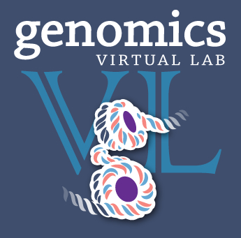
This document guides you to launch your own GVL Analysis platform, with Galaxy, using your default NeCTAR allocation.
The tutorial will go over:
The Genomics Virtual Laboratory (GVL) is a research platform that can be deployed on the cloud.
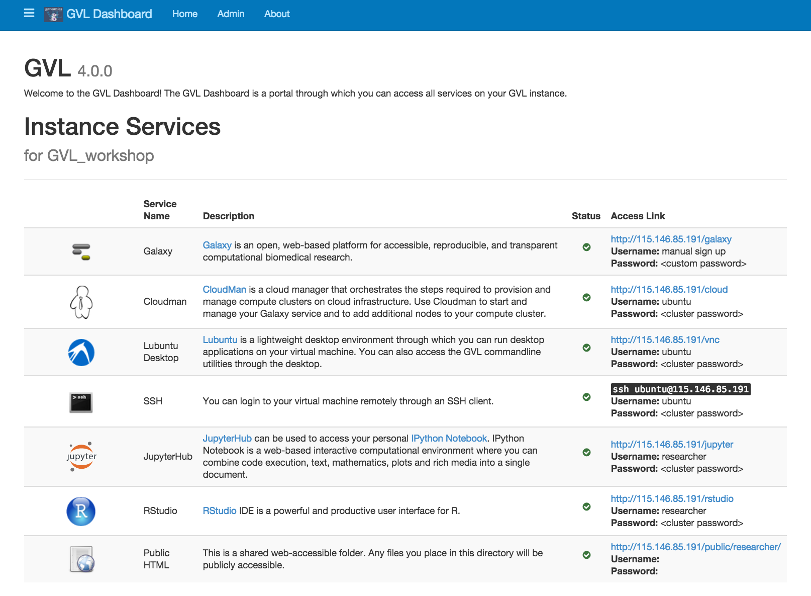
A private GVL server is a virtual machine running on the cloud and contains a pre-installed suite of tools for performing bioinformatics analyses. It differs from public GVL servers (such as the Galaxy Tutorial Server, Galaxy Melbourne, and Galaxy Queensland) by providing full administrative access to the server, as well as the full suite of GVL services, whereas public GVL servers provide restricted access for security reasons. For example, public GVL servers do not provide access to the Ubuntu desktop, the Linux command line or JupyterHub at present.
Accessing the GVL server is completely free on the Australian NeCTAR Research Cloud, provided that you have a account with NeCTAR with allocated resources.
The National eResearch Collaboration Tools and Resources project (NeCTAR) is an Australian programme that provides computing infrastructure and services to Australian researchers. The NeCTAR Cloud allows us to deploy virtual machines as a platform for research.
While it is possible to launch the GVL on Amazon, you may have to pay Amazon usage charges (the GVL software itself is free).
Login into the NeCTAR dashboard at
dashboard.rc.nectar.org.au.
Only members of the Australian Access Federation (AAF) can access Australian
Research Cloud resources. Most Australian universities are members of the
AAF, however, if you belong to an institution that is not a member of AAF,
GVL Help may be able to provide you
with credentials. You also have the option of using a commercial cloud
provider such as AWS to host your server.
Choose your organisation from the list and login using your credentials. If you are from the University of Melbourne, choose 'The University of Melbourne' and not 'The University of Melbourne (with ECP)'.
Login with your institutional username and password. If this is the first time you have accessed the Australian Research Cloud, you must agree to some terms and conditions.
When you log in for the first time, you are automatically allocated a trial project which lasts for 3 months. This trial project allows you to launch a medium instance (with 2 cores) which is sufficient for launching a GVL instance.
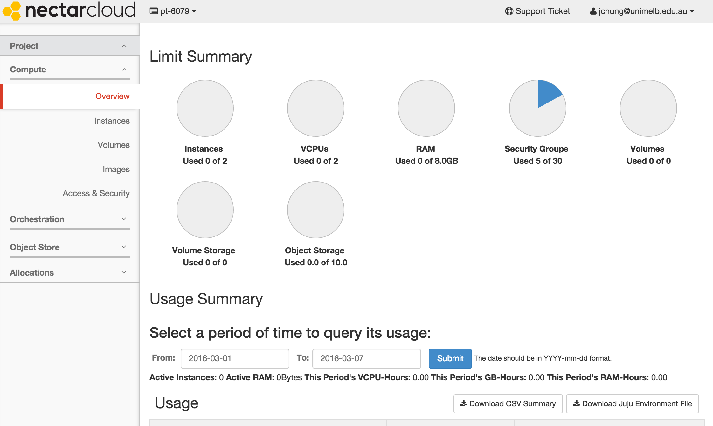
If you have projects which require more compute resources, you can apply for more allocation here.
Launching a GVL instance requires EC2 API keys from NeCTAR. Obtaining these keys is a simple 3 step process.
From the NeCTAR dashboard, on the left sidebar, navigate to
Project > Compute > Access & Security
Click on the top 'API Access' tab.
Click on the '+ View Credentials' button on the top right. A window containing your API access key (1) and your secret key (2) will appear. Click on the eye icon to view your secret key. Keep this key secret and secure.
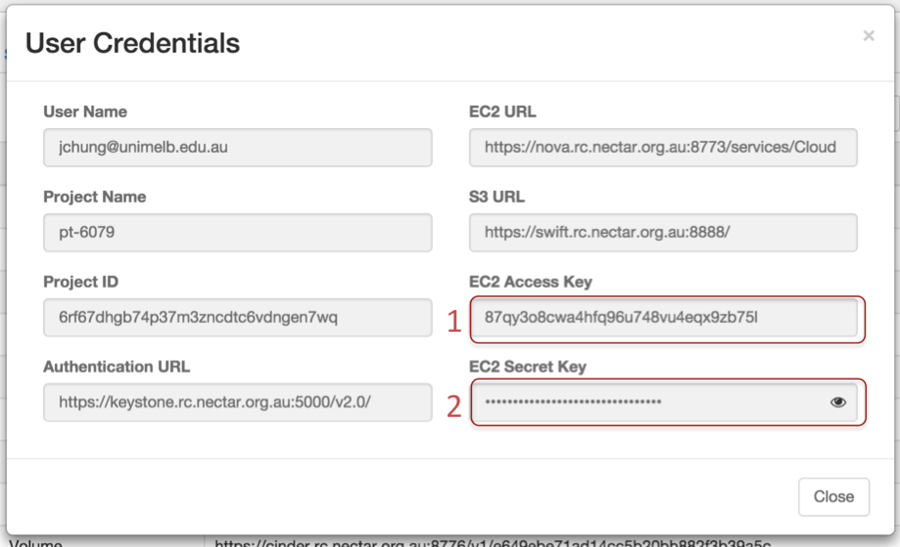
Keep this page open for later reference.
In a new browser tab, go to launch.genome.edu.au
Fill in the required fields:
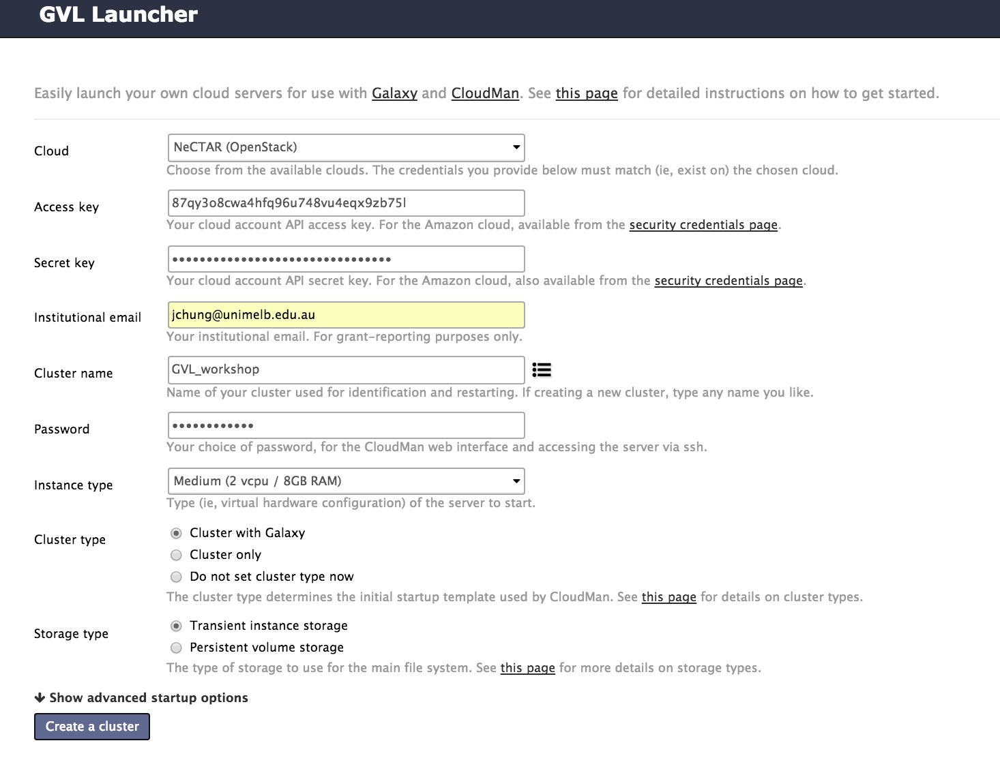
Optional advanced options
Toggle the 'Show advanced startup options' option to see more options. For
this tutorial, it is not necessary to modify any of the advanced options.
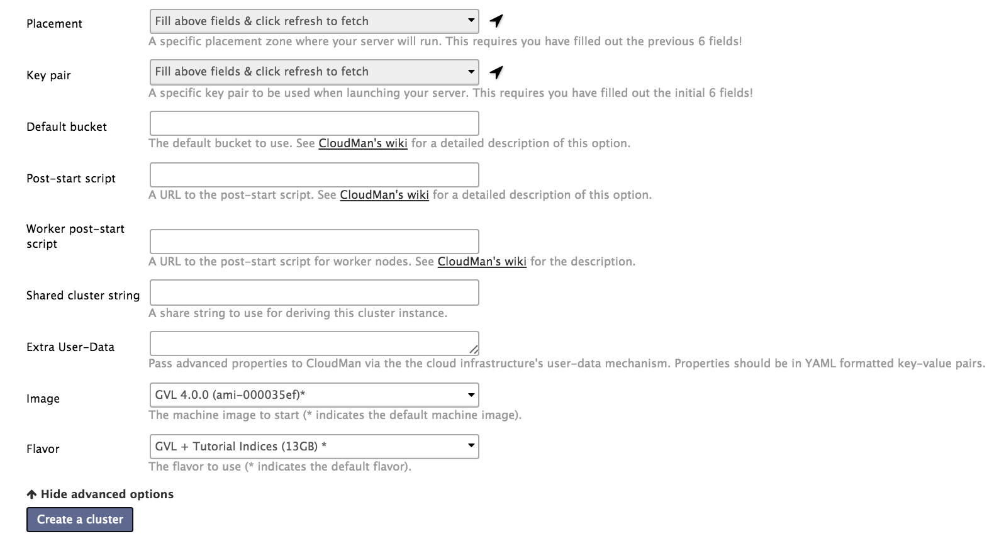
Click 'Create a cluster' to launch the image.
The launch process takes 2-5 minutes to start the machine and another 5
minutes to start and configure Galaxy.

If your progress bar seems stuck on the 'Requesting' stage for > 5 minutes, navigate back to the launch page and try selecting a different availability zone under the advanced startup options Placement field. You will need re-enter your secret key and your password.
Once your instance has finished launching, click on the cluster IP address to access your GVL dashboard.
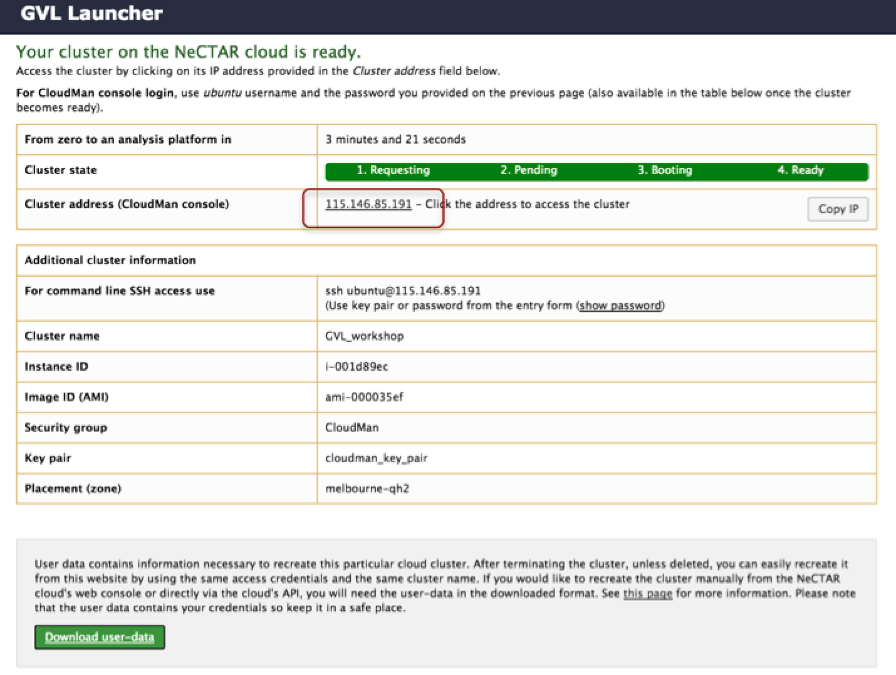
If you accidentally closed the launch page, you can find your cluster's address on the NeCTAR dashboard by navigating to Project > Compute > Instances on the left panel. This page contains a list of your instances and can be used to terminate your instance if anything goes wrong. Copy and paste the instance's IP address into your browser's URL navigation bar.
Explore the GVL dashboard. Have a read through of the services provided by the GVL.
Listed below are short descriptions of the services the GVL provides.
Galaxy is a web-based platform for computational biomedical research. The GVL has a number of Galaxy tutorials available here.
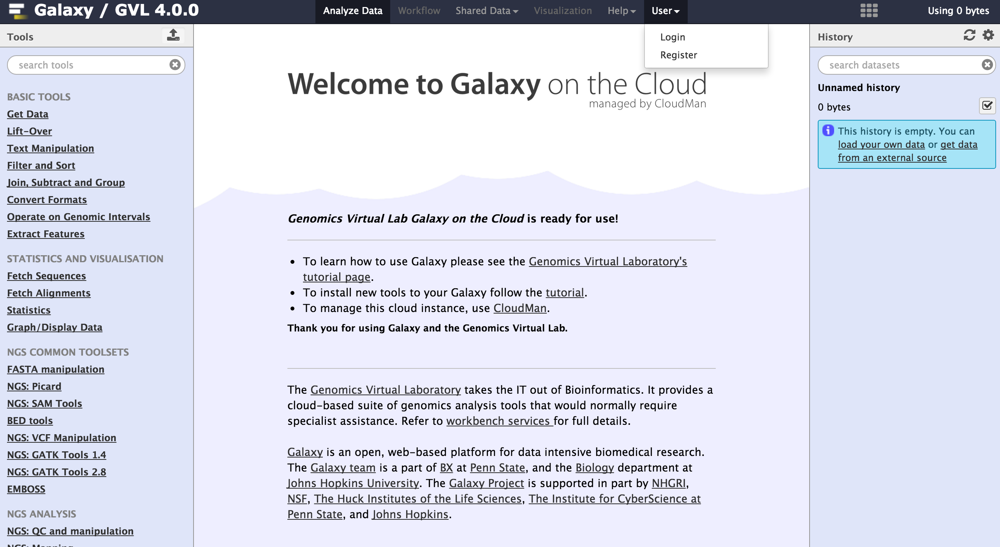
To begin using Galaxy, register as a user by navigating to User > Register on the top Galaxy bar.
CloudMan is a cloud manager that manages services on your GVL instance. Use Cloudman to start and manage your Galaxy service and to add additional nodes to your compute cluster (if you have enough resources).
You can log into CloudMan by using the username 'ubuntu' and your cluster password.
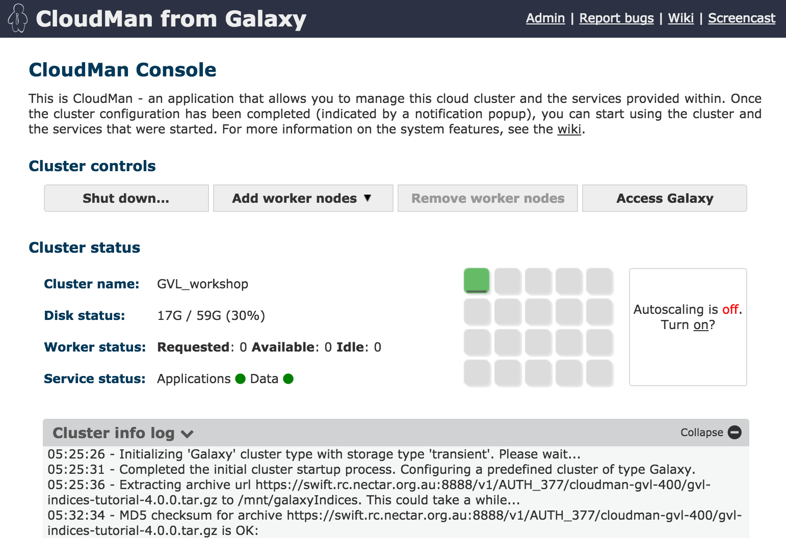
You can also shut down your instance (permanently) with CloudMan.
Lubuntu is a lightweight desktop environment through which you can run desktop applications on your virtual machine through your web browser. You can also access the GVL command line utilities through the desktop.
You can log into Lubuntu Desktop using the username 'ubuntu' and your cluster password.
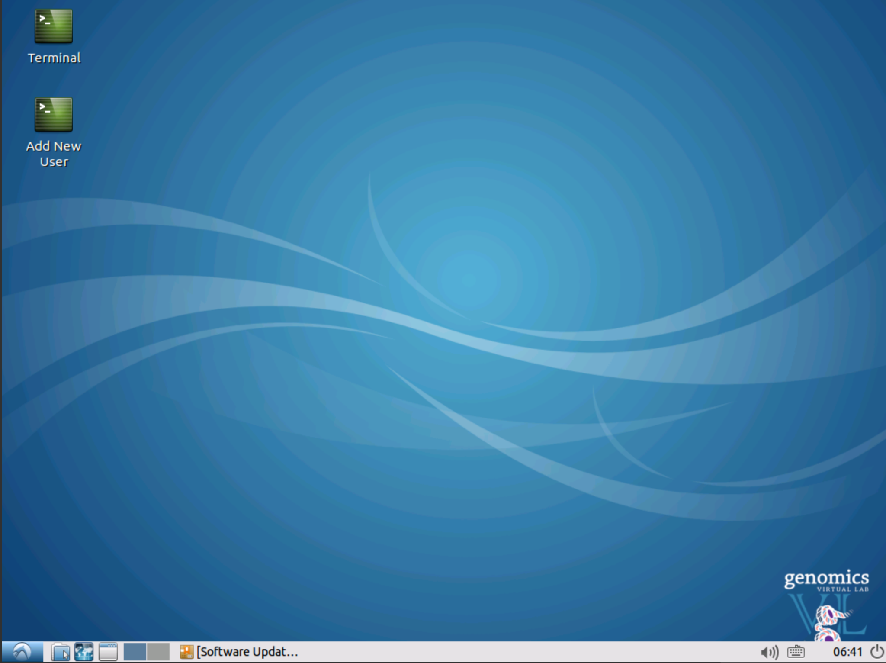
Secure Shell (SSH) is a network protocol that allows us to connect to a remotely machine. You can login to your virtual machine remotely through an SSH client.
If you are using Windows, you will need to download an SSH client such as PuTTY. If you are using OSX, open up a Terminal window.
If you are unfamiliar with the command line and UNIX, many tutorials on UNIX can be found online.
You can ssh into your machine using the either the username 'ubuntu' or the username 'researcher' and using your cluster password. It is recommended to use the researcher account when you are doing your computational research and use the ubuntu account when you need administrative powers (such as installing software).
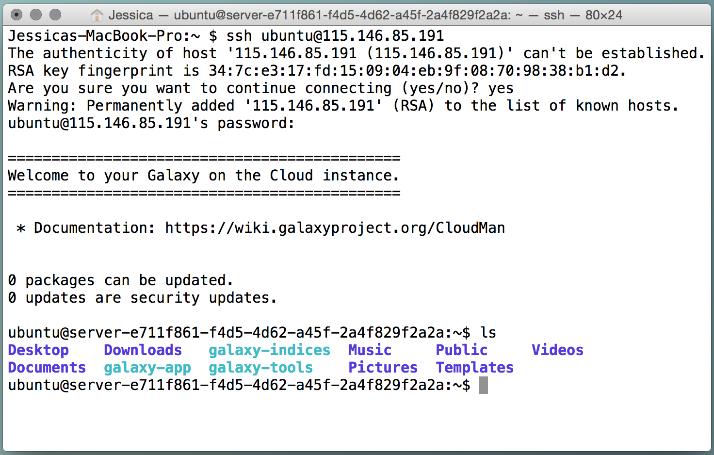
JupyterHub is a web-based interactive computational environment where you can combine code execution, text, mathematics, plots and rich media into a single document. Currently, JupyterHub can connect to Python2 and Python3 kernals.
If you are unfamiliar with Python, there are many tutorials available online.
You can log into JupyterHub with the username 'researcher' and your cluster password.
You may need to install Python packages you intend to use via the command line beforehand.
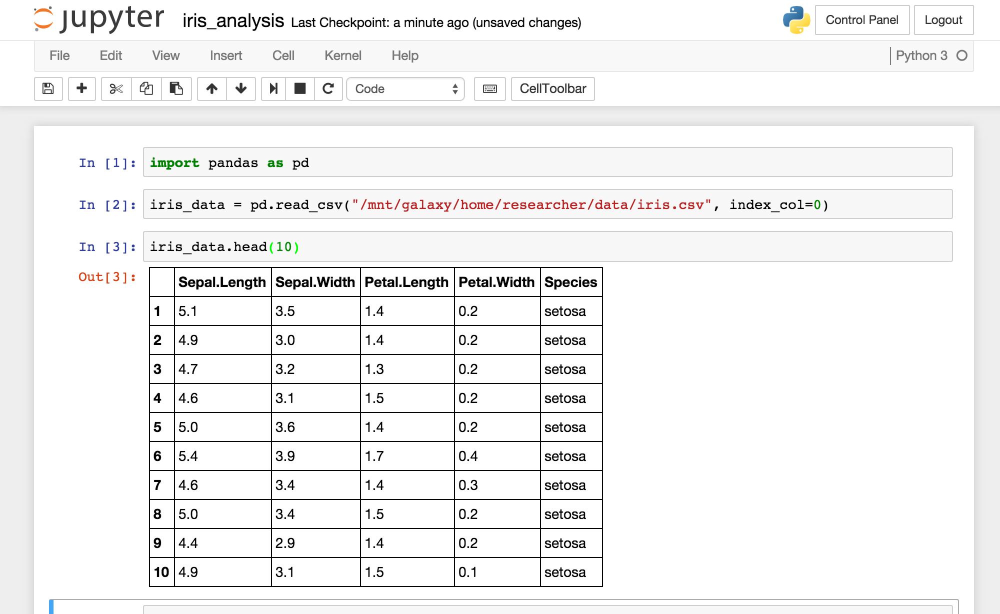
RStudio Server gives browser-based access to RStudio, the popular programming and analysis environment for the R programming language. You can find out more about RStudio here, and the R programming language here.
You can log into RStudio with the username 'researcher' and your cluster password.

This is a shared web-accessible folder. Any files you place in the directory
/home/researcher/public_html will be publicly accessible.
There are two ways to terminate your instance. Terminating your instance is permanent and all data will be deleted (unless you have persistent volume storage which you will need to apply for).
Via Cloudman
Log into CloudMan by using the username 'ubuntu' and your cluster password.
Click the Shut down... button under Cluster Controls.
Via the NeCTAR dashboard
Navigate to the Instances
page by navigating to Project > Compute > Instances on the left panel. Find
the instance you want to terminate, and on the right-most column (Actions),
click on the arrow button, and select Terminate Instance.